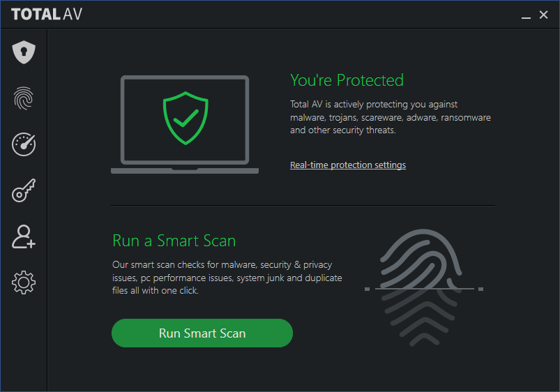
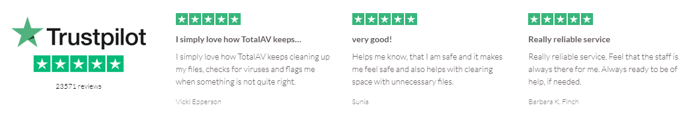
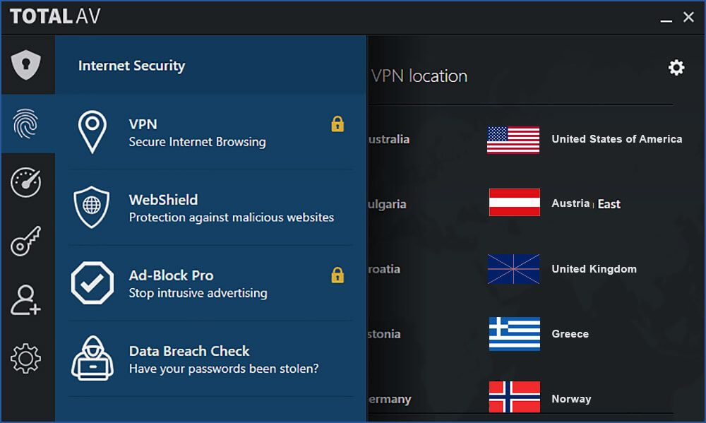
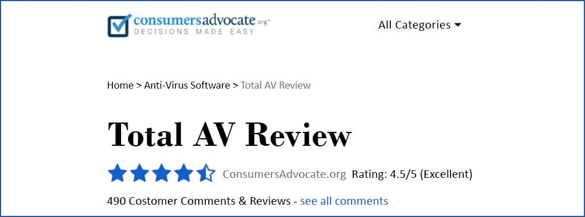
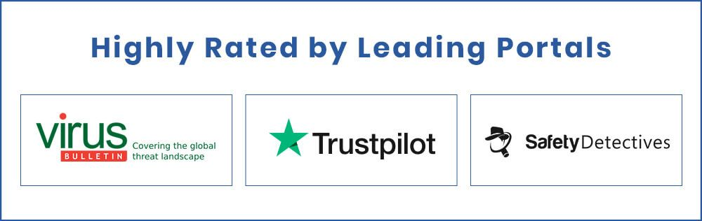
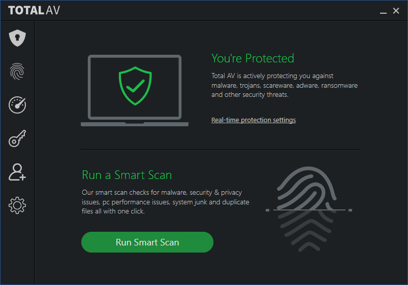
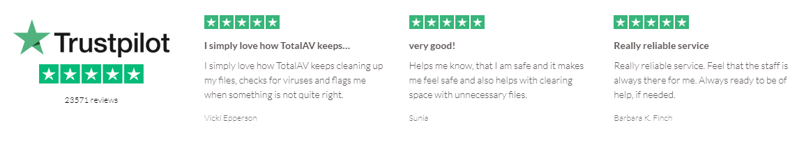
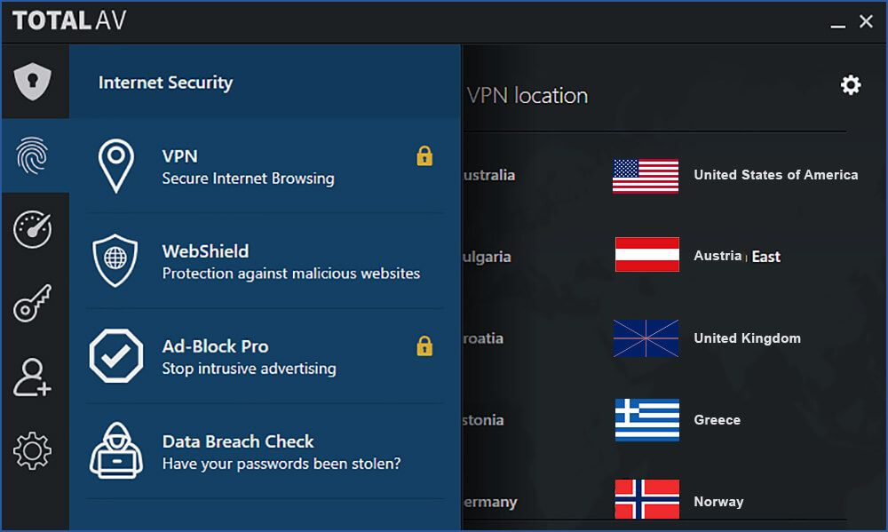
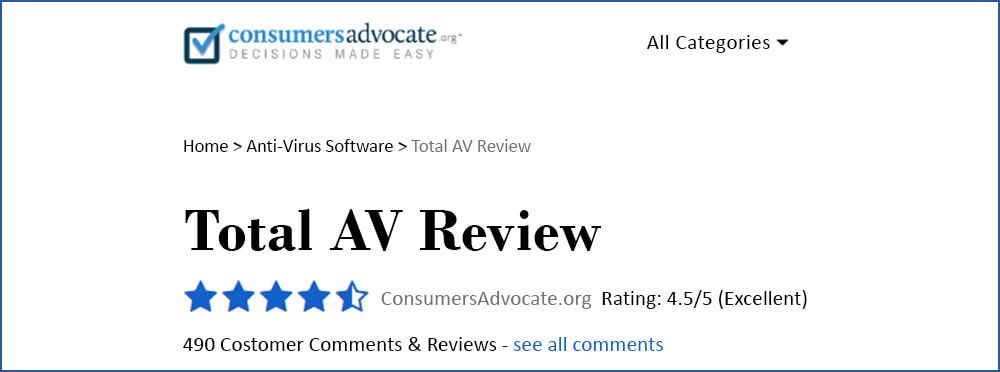
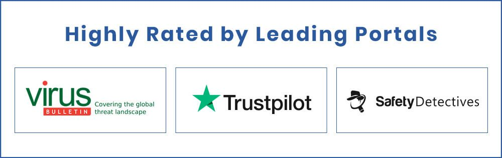

The Most Important Cyber-Security Tip You’ll Read This Year
Imagine your body without an immune system. It’s unable to fight even the smallest infections, while there are deadly viruses out there. That’s exactly how vulnerable your computer is, without a reliable antivirus software.
Any PC or device connected to the internet faces a number of threats. You innocently download a form and a virus could attack your computer. Your computer could crash, and you could lose all your important documents, personal files and even sensitive information. And, that’s not even the worst of it!
Whether it’s a bored teenager or a hardened criminal, malicious individuals are continuously trying to hack into your vulnerable system. And, their capabilities have increased with time. There’s 1 hacker attack every 39 seconds, according to a report by the University of Maryland. These hackers can access your bank account or social security details. They can steal compromising photographs from your computer and publish them on social media.
From viruses, to trojans, botnets, malware, ransomware… the list just goes on and on. And then on some more. You don’t need to understand every threat. But it’s important to know what a single attack from a malicious program can do:
Slow your computer
Make your computer behave erratically
Cause irreversible damage to your files
Delete folders, images and documents
Cause your computer to crash
Identity theft
Loss of personal data
Send messages to everyone in your contacts
Computers in big companies are protected. But your smartphone and home computer are not. If you work from home or on the go, you need to connect to the internet. Sending emails, having video conferences, downloading important documents and using social media exposes your computer to many threats.
Get smarter, get TotalAV – an award-winning antivirus software. It’s so easy to install and use, yet so powerful that it offers complete protection from a wide range of threats. What’s the best thing about it? It is compatible with Windows, Mac, iOS and Android, so you can protect your desktop computer, laptop, smartphone and tablet with just a single application.
Get the TotalAV shield – it does all the heavy lifting, so that your security is completely hassle free.

Prevention is better than cure, because if your computer breaks down, you may not be able to get it fixed quickly, impacting your work and social life. You need a reliable antivirus software that is trusted by millions across the globe thanks to its astounding features wrapped in an easy-to-use interface.
TotalAV is the industry leader in computer protection and cybersecurity. It has an unparalleled virus detection rate, gets daily virus definition updates, and provides real time protection. With TotalAV, you get peace of mind knowing your computer is in safe hands.
Here’s why TotalAV is totally awesome:

It scans, locates, quarantines and eliminates viruses within minutes. The threat is removed before it can access anything on your computer.
It’s completely hassle free. Simply specify the type of scan and frequency, the software will do the rest.

Stay protected from crooks who encrypt your files and ask for a ransom to decrypt them. Keep out frustrating ads that aggressively target you.
Use the VPN connection to keep your internet browsing anonymous.
TotalAV has a 4.5 out of 5 rating from reviews of almost 500 customers! It also received a 4.4 rating out of 5 at Safety Detectives.

TotalAV achieved a perfect score at VirusBulletin.com, which found the software successfully detected 100% malicious samples and have a 0% false positive score.

Download TotalAV Now
Any PC or device connected to the internet faces a number of threats. You innocently download a form and a virus could attack your computer. Your computer could crash, and you could lose all your important documents, personal files and even sensitive information. And, that’s not even the worst of it!
Whether it’s a bored teenager or a hardened criminal, malicious individuals are continuously trying to hack into your vulnerable system. And, their capabilities have increased with time. There’s 1 hacker attack every 39 seconds, according to a report by the University of Maryland. These hackers can access your bank account or social security details. They can steal compromising photographs from your computer and publish them on social media.
Understanding Your Worst Enemy
From viruses, to trojans, botnets, malware, ransomware… the list just goes on and on. And then on some more. You don’t need to understand every threat. But it’s important to know what a single attack from a malicious program can do:
You Need More Protection Today Than Ever Before
Computers in big companies are protected. But your smartphone and home computer are not. If you work from home or on the go, you need to connect to the internet. Sending emails, having video conferences, downloading important documents and using social media exposes your computer to many threats.
Protect Yourself from a Stressful Experience
Get smarter, get TotalAV – an award-winning antivirus software. It’s so easy to install and use, yet so powerful that it offers complete protection from a wide range of threats. What’s the best thing about it? It is compatible with Windows, Mac, iOS and Android, so you can protect your desktop computer, laptop, smartphone and tablet with just a single application.
Get the TotalAV shield – it does all the heavy lifting, so that your security is completely hassle free.

Prevention is better than cure, because if your computer breaks down, you may not be able to get it fixed quickly, impacting your work and social life. You need a reliable antivirus software that is trusted by millions across the globe thanks to its astounding features wrapped in an easy-to-use interface.
How TotalAV Keeps Your Computer Secure at All Times
TotalAV is the industry leader in computer protection and cybersecurity. It has an unparalleled virus detection rate, gets daily virus definition updates, and provides real time protection. With TotalAV, you get peace of mind knowing your computer is in safe hands.
Here’s why TotalAV is totally awesome:

Super Powerful
It scans, locates, quarantines and eliminates viruses within minutes. The threat is removed before it can access anything on your computer.
So Simple to Use
It’s completely hassle free. Simply specify the type of scan and frequency, the software will do the rest.

Keep Others Out
Stay protected from crooks who encrypt your files and ask for a ransom to decrypt them. Keep out frustrating ads that aggressively target you.
Safe Browsing
Use the VPN connection to keep your internet browsing anonymous.
Unparalleled Level of Security
TotalAV has a 4.5 out of 5 rating from reviews of almost 500 customers! It also received a 4.4 rating out of 5 at Safety Detectives.

TotalAV achieved a perfect score at VirusBulletin.com, which found the software successfully detected 100% malicious samples and have a 0% false positive score.

This Fantastic Offer Is Still Available!
We don't know how long the free version of TotalAV will still be available, so take advantage today.
Click here to get your free trial Download the trial security scan Activate your free trial version and clean up your systems now!
Download TotalAV Now